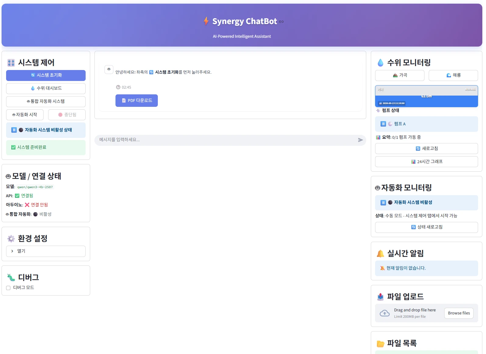
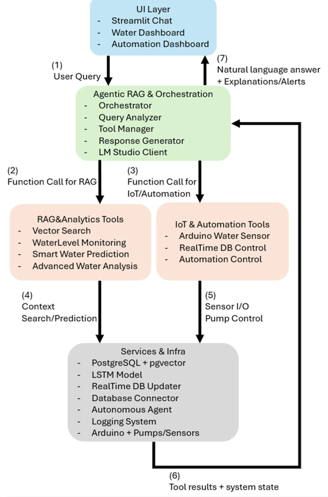
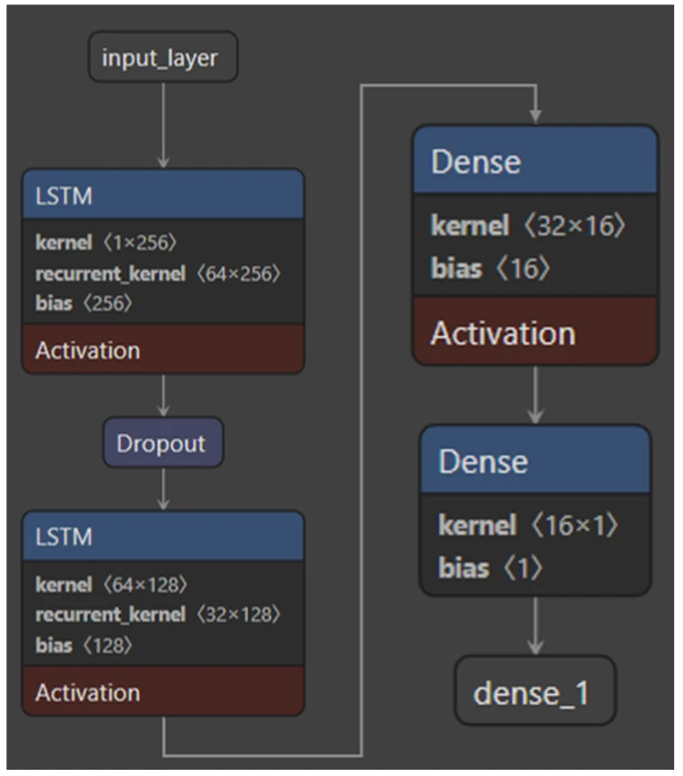
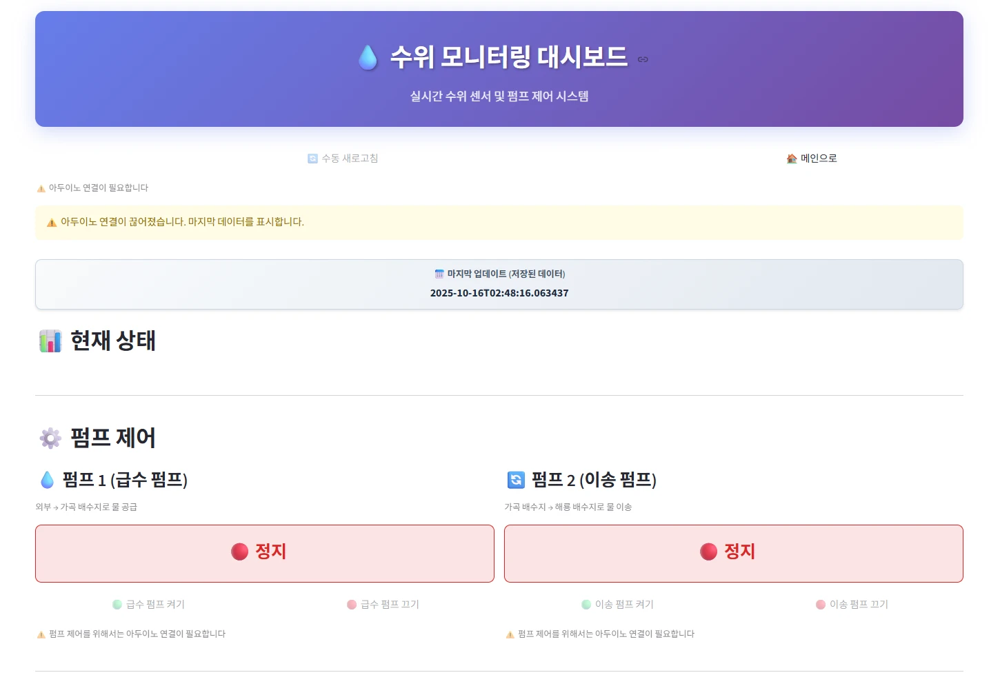
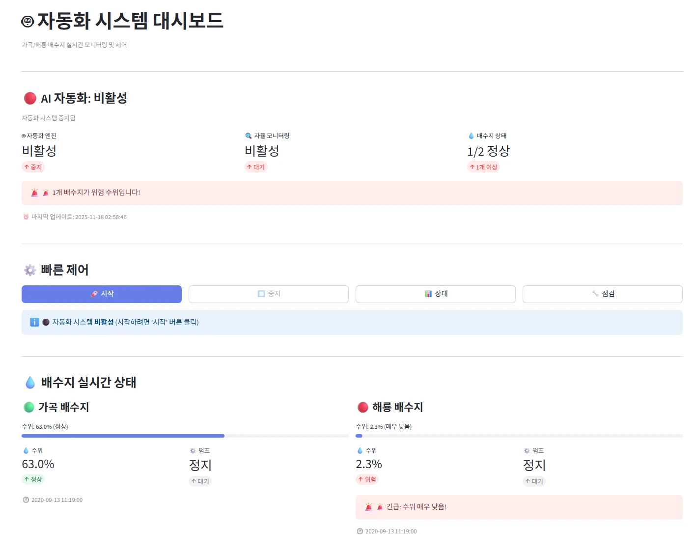
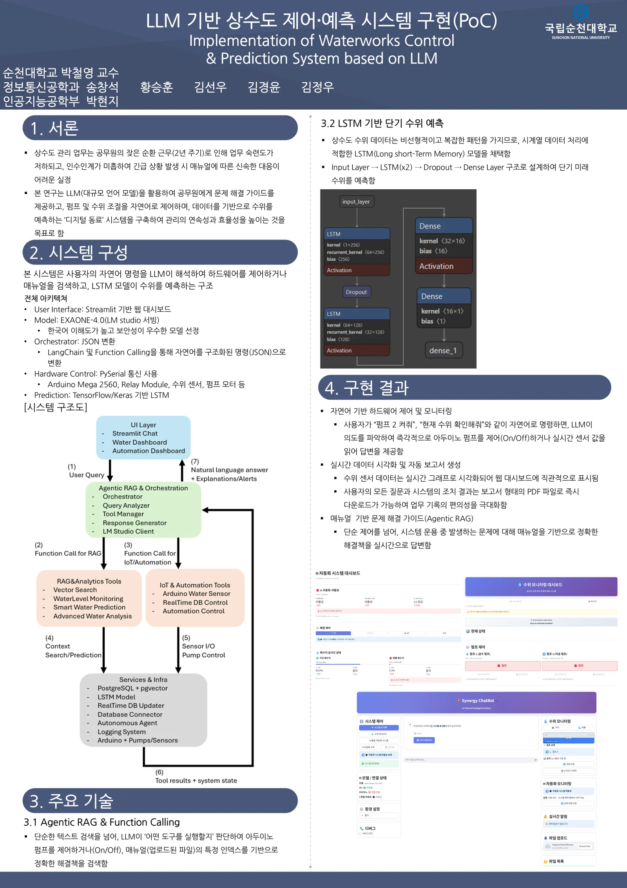

01
Overview
- 문제: 공무원 순환 근무(2년 주기)로 업무 숙련도 저하 · 인수인계 미흡 → 긴급 상황에서 매뉴얼대로 신속한 대응이 어려움
- 목표: 문제 해결 가이드 제공 · 자연어로 펌프와 수위 제어 · 데이터 기반 수위 예측을 하는 ‘디지털 동료’
- 구조: 자연어 명령 → LLM이 해석해 도구 선택 → 하드웨어 제어 / 매뉴얼 검색 / LSTM 수위 예측
- 역할: 팀장으로 프로젝트 총괄 · 전체 시스템 설계 · 개발

02
Architecture

- UI: Streamlit 웹 대시보드 (채팅 · 수위 · 자동화)
- Model: EXAONE 4.0, LM Studio로 로컬 서빙 (OpenAI 호환 API) → 한국어 이해도 · 데이터 외부 유출 없음
- Orchestrator: 자연어를 구조화된 도구 호출(JSON)로 변환해 실행
- Hardware: PySerial 통신, Arduino Mega 2560 · 릴레이 모듈 · 수위 센서 · 펌프 모터
- Data: PostgreSQL 시계열 로그 + pgvector 매뉴얼 임베딩 (LangChain 로더 · 청크 분할)
- Prediction: TensorFlow / Keras LSTM
- Docker Compose 통합 배포, 하드웨어 없는 시뮬레이션 모드
03
Agent
Agentic RAG & Function Calling
- Query Analyzer → Tool Manager → Response Generator 파이프라인, 복합 요청은 도구 연쇄 실행
- Function Calling 구현: tools API → functions API → JSON 파싱 3단 fallback
- 최종 버전: LLM 도구 선택 호출을 없애고 규칙 · 키워드 라우팅으로 전환 → 응답 속도 · 안정성 확보, 해당 없으면 매뉴얼 RAG 검색
- 도구 결과를 근거로 LLM이 최종 답변 생성 (스트리밍)
- RAG: 매뉴얼 청크 분할 →
BGE-m3-ko임베딩 → pgvector 검색
Autonomous Agent
- 10초 주기: 수위 · 예측값 · 펌프 상태 수집 → LLM이 JSON으로 결정 → 펌프 제어
- 결정 검증 · 최대 3회 재시도 · 제어 대상 허용 목록 · 4단계 경보
도구 9종
| 분류 | 도구 | 기능 |
|---|---|---|
| 자동화 | automation_control | 자율 에이전트 시작 · 중지 · 상태 |
| 예측 | smart_water_prediction | DB 이력 기반 LSTM 예측 (1분 · 5분 · 30분 · 1시간 · 6시간) |
| 예측 | water_level_prediction | 입력 시계열 기반 LSTM 예측 |
| 분석 | water_level_monitoring | 현재 수위 · 이력 · 그래프 |
| 분석 | advanced_water_analysis | 추세 · 위험 도달 시간 · 펌프 시뮬레이션 |
| 하드웨어 | arduino_water_sensor | 센서 읽기 · 펌프 제어 |
| 하드웨어 | real_time_database_control | 센서 → DB 실시간 기록 관리 |
| RAG | vector_search | 매뉴얼(PDF · TXT) 의미 검색 |
| RAG | list_files | 검색 대상 문서 목록 |
04
LSTM

- 수위 데이터는 비선형 · 복잡한 패턴 → 시계열에 적합한 LSTM 채택
- Input → LSTM(64) → Dropout → LSTM(32) → Dense(16) → Dense(1)
- 단기 미래 수위 예측: 1분 · 5분 · 30분 · 1시간 · 6시간
- 모델을 쓸 수 없을 때 선형 회귀 · 이동평균으로 fallback
- “30분 후”, “오후 3시”, “100m 도달 시점” 같은 자연어 시간 표현 처리
05
Results
- 자연어 하드웨어 제어: “펌프 2 켜줘”, “현재 수위 확인해줘” → 아두이노 펌프 On/Off · 실시간 센서 값 응답
- 실시간 시각화 · 자동 보고서: 수위 실시간 그래프, 질문과 조치 결과를 PDF 보고서로 다운로드
- 매뉴얼 기반 문제 해결: 운용 중 발생한 문제에 매뉴얼 근거로 해결책 답변


👤 가곡 배수지 1시간 뒤 수위 예측해줘
🤖 [smart_water_prediction] 1시간 후 예상 수위 46.1m
👤 매뉴얼에서 비상 대응법 찾아줘
🤖 [vector_search] 매뉴얼 12페이지 관련 내용 …
06